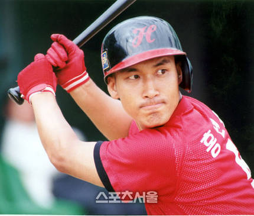
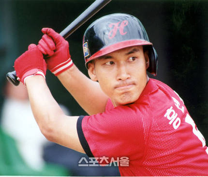

| 방수원 | 일자: 1984.05.05 한국프로야구 최초, 6삼진, 3사사구 |
|---|---|
|
선동열 |
일자: 1989.07.06 9삼진, 3사사구 |
 

| 김준환/백인호 /박철우 |
일자: 1989.06.01 한국프로야구 최초 3연속타자 홈런 |
|---|---|
| 이호성/한대화 /홍현우 |
일자: 1992.05.31 3연속타자 |
| 김재덕/홍현우 /이호성 |
일자: 1996.07.05 3연속타자 |
| 최훈재/홍현우 /이호성 |
일자: 1997.06.15 3연속타자 |
| 마해영/홍세완 /박재홍 |
일자: 2004.04.15 3연속타자 |
|
김주찬 |
일자: 2016.04.15 팀 내 최초 |
|---|---|
|
버나디나 |
일자: 2017.08.03 외국인 선수 최초 |